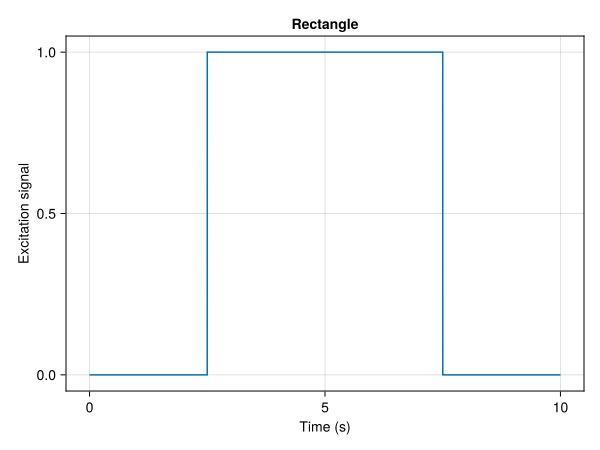
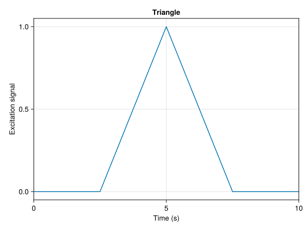
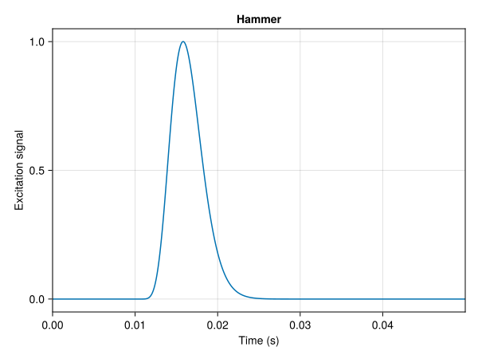
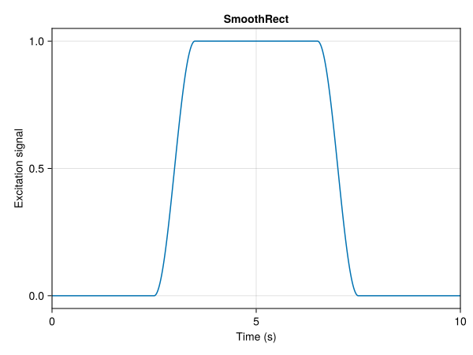
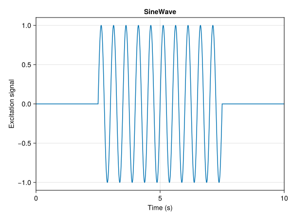
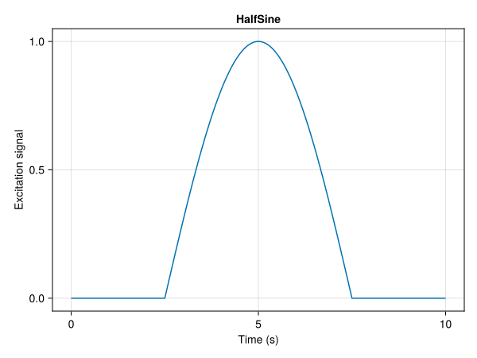
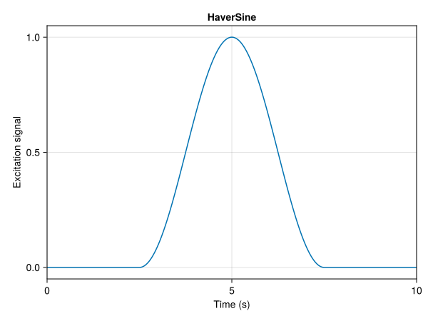
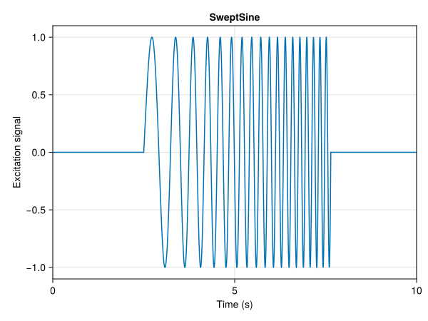
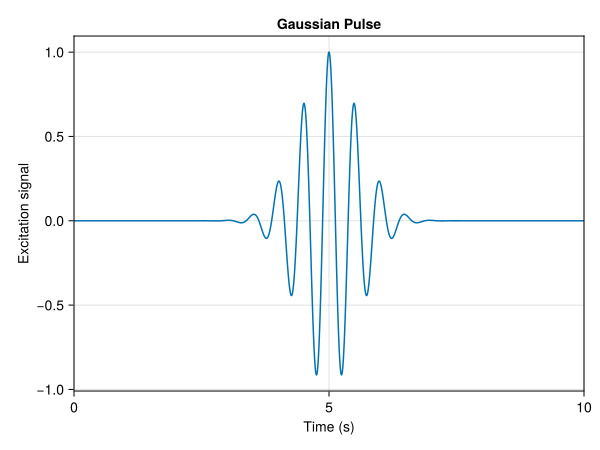
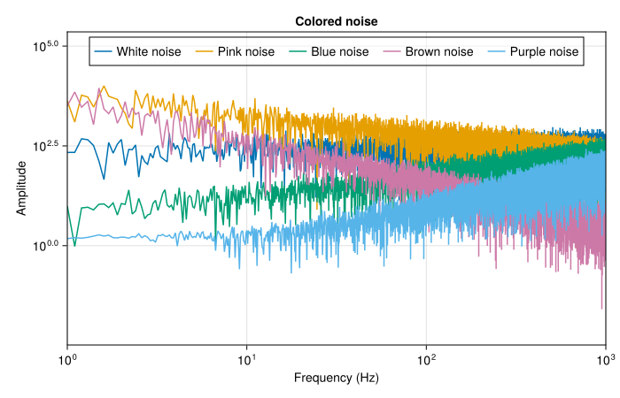

Rectangle(F, tstart, duration)Struct to define a rectangular excitation signal
Fields
F::Real: Amplitude of the force [N]tstart::Real: Starting time of the excitation [s]duration::Real: Duration of the excitation [s]
To define an excitation, two steps must be followed:
Initialize an excitation type:
Compute the excitation signal corresponding to the given excitation type over a given duration t (See Section 2 for details):
The rectangular signal is defined by the following equation: \[ F(t) = \begin{cases} F_0 & \text{if } t \in [t_\text{start}, t_\text{start} + T] \\ 0 & \text{otherwise} \end{cases}, \] where \(F_0\) is the amplitude of the signal, \(t_\text{start}\) is the start time of the signal, and \(T\) is the duration of the signal.
Rectangle
Rectangle(F, tstart, duration)Struct to define a rectangular excitation signal
Fields
F::Real: Amplitude of the force [N]
tstart::Real: Starting time of the excitation [s]
duration::Real: Duration of the excitation [s]

The triangle signal is defined by the following equation: \[ F(t) = \begin{cases} \frac{2F_0}{T}\left(t - t_\text{start}\right) & \text{if } t \in [t_\text{start}, t_m] \\ F_0 - \frac{2F_0}{T}(t - t_m) & \text{if } t \in [t_m, t_\text{start} + T] \\ 0 & \text{otherwise} \end{cases}, \] where \(F_0\) is the amplitude of the signal, \(t_\text{start}\) is the start time of the signal, \(T\) is the duration of the signal and \(t_m = t_\text{start} + T/2\) is the time at which the signal reaches its maximum value.
Triangle
Triangle(F, tstart, duration)Struct to define a triangular excitation signal
Fields
F::Real: Amplitude of the force [N]
tstart::Real: Starting time of the excitation [s]
duration::Real: Duration of the excitation [s]

The hammer impact signal is supposed to have the shape of a Gamma distribution \[ F(t) = \begin{cases} F_0\left(\frac{t_h}{p\theta}\right)^p \text{exp}\left(-\frac{t_h}{\theta} + p\right), & \text{if } t \geq t_\text{start} \\ 0, & \text{otherwise} \end{cases}, \] where \(F_0\) is the amplitude of the signal, \(t_h = t - t_\text{start}\) is the time since the impact, \(p\) is the shape parameter, and \(\theta\) is the scale parameter.
Hammer
Hammer(F, tstart, k, θ)Struct to define a hammer impact excitation signal
Fields
F::Real: Amplitude of the force [N]
tstart::Real: Starting time of the excitation [s]
p::Real: Shape parameter
θ::Real: Intensity parameter [s]

The smooth rectangular signal (custom Tukey window) is defined by the following equation: \[ F(t) = \begin{cases} \frac{F_0}{2}\left[1 - \cos\left(\frac{2\pi (t - t_\text{start})}{\alpha T}\right)\right] & \text{if } t \in [t_\text{start}, t_\text{start} + t_\text{rise}] \\ F_0 & \text{if } t \in [t_\text{start} + t_\text{rise}, t_\text{start} + t_\text{rise} + T_\text{rect}] \\ \frac{F_0}{2}\left[1 - \cos\left(\frac{2\pi (t - t_\text{start} - t_\text{rise} - T_\text{rect})}{\alpha T}\right)\right] & \text{if } t \in [t_\text{start} + t_\text{rise} + T_\text{rect}, t_\text{start} + T] \\ \end{cases}, \] where \(F_0\) is the amplitude of the signal, \(t_\text{start}\) is the start time of the signal, \(T\) is the duration of the signal, \(t_\text{rise}\) is the duration to reach \(F_0\) and \(\alpha = \frac{2t_\text{rise}}{T}\) and \(T_\text{rect} = T - 2t_\text{rise}\) is the duration of the rectangular part of the signal.
SmoothRect
SmoothRect(F, tstart, tr, duration)Struct to define a smooth rectangular excitation signal
Fields
F::Real: Amplitude of the force [N]
tstart::Real: Starting time of the excitation [s]
duration::Real: Duration of the excitation [s]
trise::Real: Rise time from 0 to F [s]
Note: SmoothRect is actually a custom Tukey window for which the coefficient α is computed to satisfy the trise given by the user

The sine signal is defined by the following equation: \[ F(t) = \begin{cases} F_0 \sin\left(\omega (t - t_\text{start}) + \theta\right), & \text{if } t \in [t_\text{start}, t_\text{start} + T] \\ 0, & \text{otherwise} \end{cases}, \] where \(F_0\) is the amplitude of the signal, \(\omega\) is the angular frequency of the signal, and \(\theta\) is the phase of the signal.
Sometimes it is necessary to have a signal that ends at zero. In this case, the duration of the signal must be adjusted to ensure that the signal ends at zero. To do so, one have to find the smallest integer \(n\) such that at \(t = t_\text{start} + T\): \[ \sin(\omega T + \theta) = 0 \Rightarrow \omega T + \theta = 2\pi n \Rightarrow n = \frac{\omega T + \theta}{2\pi}. \]
Once \(n\) is found, the duration of the signal must be adjusted to: \[ T_\text{new} = \frac{2\pi n - \theta}{\omega}. \]
SineWave
SineWave(F, tstart, duration, freq; zero_end = true)Struct to define a sine wave excitation signal
Constructor parameters
F::Real: Amplitude of the force [N]
tstart::Real: Starting time of the excitation [s]
duration::Real: Duration of the excitation [s]
freq::Real: Frequency of the excitation [Hz]
zero_end::Bool: Boolean to set the excitation to 0 at the end of the duration (default = true)
Fields
F::Real: Amplitude of the force [N]
tstart::Real: Starting time of the excitation [s]
duration::Real: Duration of the excitation [s]
ω::Real: Frequency of the excitation [Hz]
zero_end::Bool: Boolean to set the excitation to 0 at the end of the duration (default = true)

The half-sine signal is defined by the following equation: \[ F(t) = \begin{cases} F_0 \sin(\frac{\pi (t - t_\text{start}}{T}) & \text{if } t \in [t_\text{start}, t_\text{start} + T] \\ 0 & \text{otherwise} \end{cases}, \] where \(F_0\) is the amplitude of the signal, \(t_\text{start}\) is the start time of the signal, and \(T\) is the duration of the signal.
HalfSine
HalfSine(F, tstart, duration)Struct to define a half sine excitation signal
Fields
F::Real: Amplitude of the force [N]
tstart::Real: Starting time of the excitation [s]
duration::Real: Duration of the excitation [s]

The haversine (or versed sine) signal is defined by the following equation: \[ F(t) = \begin{cases} F_0\left(1 - cos(\frac{2\pi t}{T}\right) & \text{if } t \in [t_\text{start}, t_\text{start} + T] \\ 0 & \text{otherwise} \end{cases}, \] where \(F_0\) is the amplitude of the signal, \(t_\text{start}\) is the start time of the signal, and \(T\) is the duration of the signal.
HaverSine
HaverSine(F, tstart, duration)Struct to define a Haversine (or versed sine) excitation signal
Fields
F::Real: Amplitude of the force [N]
tstart::Real: Starting time of the excitation [s]
duration::Real: Duration of the excitation [s]

The swept sine signal is defined by the following equation: \[ F(t) = \begin{cases} F_0 \sin(\theta(t)) & \text{if } t \in [t_\text{start}, t_\text{start} + T] \\ 0 & \text{otherwise} \end{cases}, \] where \(F_0\) is the amplitude of the signal, \(t_\text{start}\) is the start time of the signal, \(T\) is the duration of the signal and \(\theta(t)\) is the instantaneous phase.
The instantaneous phase is given by: \[ \theta(t) = \theta_0 + 2\pi\int_0^t f(\tau) d\tau, \] where \(f(\tau)\) is the instantaneous frequency of the signal at time \(\tau\) and \(\theta_0\) is the initial phase (set to 0 here).
In this package, three possible types of swept sine signals are available:
Linear swept sine: \[ f(t) = f_\text{start} + \beta(t - t_\text{start}) \Rightarrow \theta(t) = 2\pi\left(f_\text{start}(t - t_\text{start}) + \frac{\beta (t - t_\text{start})^2}{2}\right), \] where:
Quadratic swept sine: \[ f(t) = f_\text{start} + \beta (t - t_\text{start})^2 \Rightarrow \theta(t) = 2\pi\left(f_\text{start}(t - t_\text{start}) + \frac{\beta (t - t_\text{start})^3}{3}\right), \] where \(\beta = \frac{f_\text{end} - f_\text{start}}{T^2}\).
Logarithmic swept sine: \[ f(t) = f_\text{start}\beta^{t - t_\text{start}} \Rightarrow \theta(t) = \frac{2\pi f_\text{start}}{\log(\beta)}\left(\beta^{t - t_\text{start}} - 1\right), \] where \(\beta = \left(\frac{f_\text{end}}{f_\text{start}}\right)^{1/T}\).
Similarly to the sine signal, the duration of the signal must be adjusted to ensure that the signal ends at zero. To do so, one have to find the smallest integer \(n\) such that at \(t = t_\text{start} + T\): \[ \theta(t) = 2\pi n. \]
In doing so, we have for:
Linear swept sine: \[ n = (f_\text{start} + f_\text{end})\frac{T}{2} \Rightarrow T_\text{new} = \frac{2n}{f_\text{start} + f_\text{end}}. \]
Quadratic swept sine: \[ n = (2f_\text{start} + f_\text{end})\frac{T}{3} \Rightarrow T_\text{new} = \frac{3n}{2f_\text{start} + f_\text{end}}. \]
Logarithmic swept sine: \[ n = \frac{f_\text{end} - f_\text{start}}{\log(f_\text{end}/f_\text{start})}T \Rightarrow T_\text{new} = \frac{n\log(f_\text{end}/f_\text{start})}{f_\text{end} - f_\text{start}}. \]
SweptSine
SweptSine(F, tstart, duration, fstart, fend, type)Struct to define a swept sine excitation signal
Fields
F::Real: Amplitude of the force [N]
tstart::Real: Starting time of the excitation [s]
duration::Real: Duration of the excitation [s]
fstart::Real: Starting frequency [Hz]
fend::Real: Ending frequency [Hz]
type::Symbol: Type of sweep
:lin - linear (default)
:quad - quadratic
:log - logarithmic
zero_end::Bool: Boolean to set the excitation to 0 at the end of the duration (default = true)
# Time parameters
Δt = 1e-3
t = 0.:Δt:10.
# Excitation parameters
F0 = 1.
tstart = 2.5
duration = 5.
fstart = 1.
fend = 6.
type_swept = :lin
# Initialize SweptSine type
chirp = SweptSine(F0, tstart, duration, fstart, fend, type_swept, zero_end = true)
# Compute the excitation
F = excitation(chirp, t)
The Gaussian pulse signal is defined by the following equation: \[ F(t) = \begin{cases} F_0 \exp\left(-\frac{t_p^2}{2\sigma^2}\right) \cos(2\pi f_c t_p), & \text{if } t \geq t_\text{start} \\ 0, & \text{otherwise} \end{cases}, \] where \(F_0\) is the amplitude of the signal, \(t_\text{start}\) is the start time of the signal, \(\sigma\) is the standard deviation of the signal, and \(f_c\) is the carrier frequency. Here \(t_p = t - t_\text{start} - T/2\) so that the Gaussian pulse reaches its maximum value at \(t = t_\text{start} + T/2\).
The design of the Gaussian pulse assumes that it tends to zero when \(t = t_\text{start} + T\). This requirement implies that the standard deviation \(\sigma\) must be chosen such that the Gaussian pulse is zero at \(t = t_\text{start} + T\). This condition can only be satisfied within some precision. More precisely, the idea is to find the quantile \(n\) such that \(T = n\sigma\). Consequently, if we assume that \(F(t_\text{start} + T) = 10^{-p}\) (with \(p\) a given precision), we have: \[ n = 2\sqrt{2(p\log 10 + \log F_0)} \Rightarrow \sigma = \frac{T}{n}. \]
GaussianPulse
GaussianPulse(F, tstart, duration, fc)Struct to define a Gaussian pulse excitation signal
Fields
F::Real: Amplitude of the force [N]
tstart::Real: Starting time of the excitation [s]
duration::Real: Duration of the excitation [s]
fc::Real: Center frequency of the pulse [Hz]
precision::Real: Precision of the pulse (default = 4.)
Note on the parameter precision
The precision parameter calibrates the standard deviation of the pulse, so that the duration = n x σ, within some precision. If n = 1.96 then the confidence interval of the Gaussian distribution is 95%. To do so, we compute n so that at t = duration = n x σ , the amplitude of Fexp(-0.5(t - duration/2)^2/sigma^2) = 10^(-precision)

Colored noise is a random signal that has a power spectral density that is not (necessarily) flat over a given frequency range. In practice, colored noise is also refered to as “power-law noise” since its power spectral density is proportional to \(f^{-\alpha}\) (\(f\): frequency) and its spectrum is proportional to \(f^{-\alpha/2}\).
In this package, five types of colored noise are available:
The general procedure to generate a colored noise signal is as follows:
Additional steps can be added such as:
Normalization: Ensure that the colored noise has the desired variance and preserves the energy of the white noise
Filtering: Obtain a band-limited colored noise
ColoredNoise
ColoredNoise(F, color)Struct to define a colored noise excitation signal
Fields
F::Real: Mean amplitude of the force [N]
tstart::Real: Starting time of the excitation [s]
duration::Real: Duration of the excitation [s]
σ::Real: Target standard deviation of the colored noise
color::Symbol: Color of the noise
:white (default)
:pink
:blue
:brown
:purple
band_freq::AbstractVector: Frequencies used to defined the bandpass filter applied to the colored noise
# Time parameters
Δt = 1e-4
t = 0.:Δt:10.
nt = length(t)
fs = 1/Δt
# Excitation parameters
F0 = 1.
tstart = 0.
duration = 10.
σ = 1.
# Initialize ColoredNoise type
exc_white = ColoredNoise(F0, tstart, duration, σ, color = :white)
exc_pink = ColoredNoise(F0, tstart, duration, σ, color = :pink)
exc_blue = ColoredNoise(F0, tstart, duration, σ, color = :blue)
exc_brown = ColoredNoise(F0, tstart, duration, σ, color = :brown)
exc_purple = ColoredNoise(F0, tstart, duration, σ, color = :purple)
# Compute the spectrum of the colored noise
freq = rfftfreq(nt, fs)
S_white = rfft(excitation(exc_white, t))
S_pink = rfft(excitation(exc_pink, t))
S_blue = rfft(excitation(exc_blue, t))
S_brown = rfft(excitation(exc_brown, t))
S_purple = rfft(excitation(exc_purple, t))
excitation functionexcitation
excitation(type, t)Computes different types of excitation signals
Inputs
type : Excitation type
Triangle
Rectangle
Hammer
SmoothRect
SineWave
HalfSine
HaverSine
SweptSine
GaussianPulse
ColoredNoise
t: Time vector
Output
F: Excitation signal